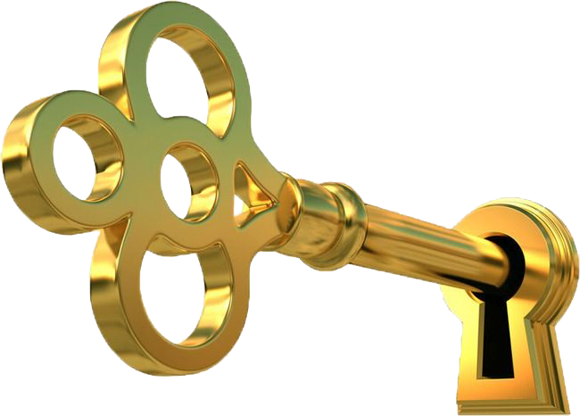
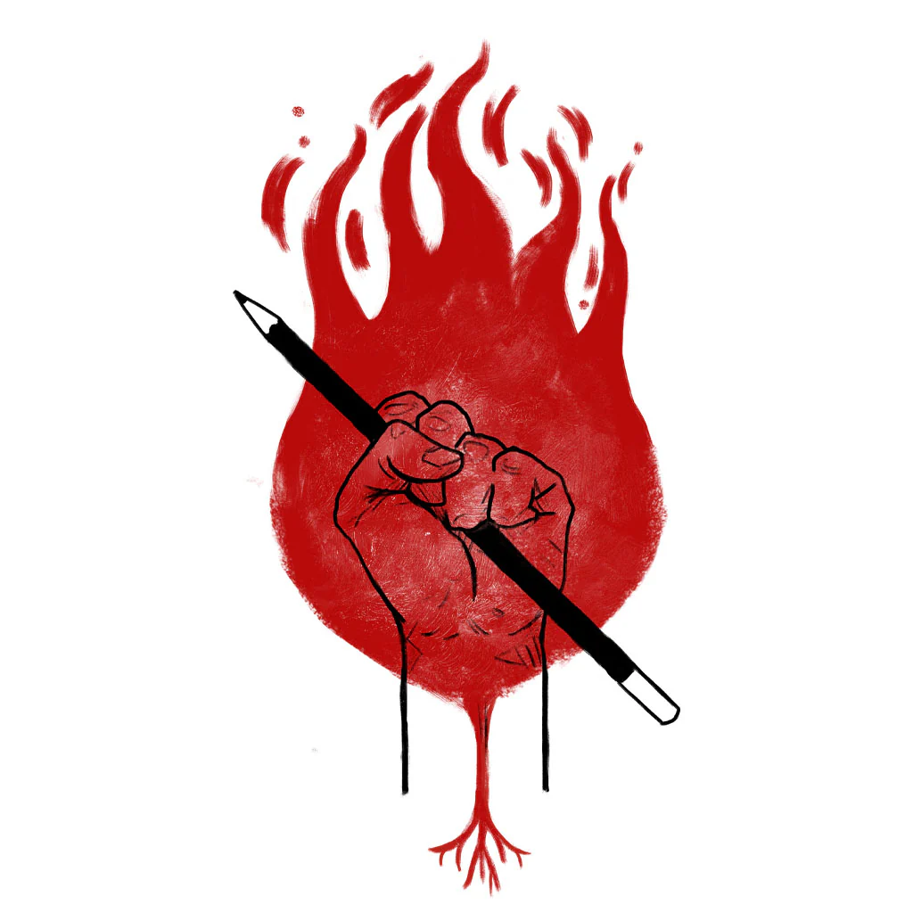

Paulo Reglus Neves Freire
Coded and Designed By Henry - 1DS®
Introdução
Patrono da Educação Brasileira
Paulo Freire, considerado o Patrono da Educação Brasileira, é reconhecido mundialmente por suas contribuições revolucionárias à pedagogia. Seu enfoque na "educação problematizadora" desafiou o modelo tradicional de "educação bancária", promovendo um aprendizado baseado no diálogo, na reflexão crítica, e na participação ativa dos estudantes. Freire introduziu o conceito de "conscientização", incentivando os alunos a entender e transformar as estruturas socioeconômicas e políticas que moldam suas vidas. Seu trabalho teve um profundo impacto social e político, especialmente durante períodos de agitação social na América Latina, propondo a educação como uma ferramenta para a justiça social e a igualdade.
A influência duradoura de Freire se estende além das fronteiras do Brasil, com suas teorias sendo aplicadas em programas de educação e alfabetização ao redor do mundo. Em 2012, o governo brasileiro, reconhecendo seu legado e impacto, oficializou Paulo Freire como Patrono da Educação Brasileira através de uma lei sancionada pela presidente Dilma Rousseff. Esse título reflete o profundo respeito e admiração pelo seu trabalho, que continua a inspirar educadores e ativistas na busca por uma educação que promova a liberdade e a igualdade.
Pedagogia do Oprimido
"Pedagogia do Oprimido" é uma obra de Paulo Freire que apresenta uma crítica profunda ao modelo tradicional de educação, que ele chama de "educação bancária". Neste modelo, o conhecimento é depositado pelo educador no educando, o que perpetua a opressão e a desumanização. Freire propõe uma alternativa, a "educação problematizadora", que é baseada no diálogo e na interação crítica entre educador e educando, promovendo a conscientização e a libertação.
No centro da pedagogia de Freire está a ideia de que a educação deve ser um ato de libertação, um processo que permite aos indivíduos compreender e transformar sua realidade. O diálogo é fundamental neste processo, pois cria uma relação de parceria entre o educador e o educando, ambos aprendendo e ensinando. Através deste diálogo, os indivíduos desenvolvem a "conscientização", uma compreensão profunda das realidades sociais, políticas e econômicas que moldam suas vidas.
"Pedagogia do Oprimido" não apenas desafia os métodos tradicionais de educação, mas também fornece uma metodologia para o ensino e a aprendizagem que envolve respeito mútuo, criação conjunta de conhecimento e um compromisso com a justiça social e a emancipação. A obra é um chamado à ação para transformar a educação em uma ferramenta de empoderamento e mudança social.
Métodos e Conceitos Chave
Educação Problematizadora
A educação problematizadora, central na pedagogia de Freire, contrasta com a tradicional "educação bancária". Enquanto a última trata o estudante como um recipiente passivo a ser "enchido" com conhecimento, a educação problematizadora vê o estudante como um participante ativo no processo de aprendizagem. Esse método estimula os alunos a questionar a realidade, promovendo um aprendizado que parte das experiências e realidades dos próprios estudantes, conectando os conteúdos escolares com suas vidas e comunidades.
Educação Bancária
Paulo Freire criticou o modelo tradicional de educação, que ele chamou de "educação bancária". Neste modelo, o conhecimento é depositado pelo educador no educando, sem que haja interação ou questionamento crítico por parte do aluno. Freire argumenta que esse modelo reforça as hierarquias de poder e mantém os alunos em uma posição de submissão, impedindo-os de se tornarem pensadores críticos e transformadores de sua própria realidade.
Diálogo
O diálogo é o coração da pedagogia freiriana. Para Freire, o diálogo não é apenas uma técnica didática, mas uma necessidade ética fundamental para a humanização tanto dos estudantes quanto dos professores. No processo educativo, o diálogo é uma ferramenta que permite a ambos, professor e aluno, aprender e ensinar simultaneamente. Isso contribui para a construção de um conhecimento que é relevante e profundamente conectado às realidades dos alunos.
Conscientização
A conscientização, ou "conscientização", é o processo pelo qual os indivíduos se tornam cientes das realidades sociais, políticas e econômicas que moldam suas vidas. Este conceito é fundamental na pedagogia de Freire, pois ele propõe que a educação deve ir além do ensino acadêmico e contribuir para que os alunos se tornem cidadãos conscientes e capazes de agir para transformar suas realidades.
Cultura do Silêncio
Freire descreve a "cultura do silêncio" como a condição em que as classes oprimidas são privadas de uma voz. A educação bancária contribui para esta condição ao desencorajar o questionamento e ao reforçar o poder dos opressores. Ao promover a educação problematizadora e o diálogo, Freire visa romper essa cultura do silêncio, empoderando os oprimidos para que se expressem e lutem contra as injustiças.
Impacto Global e Legado de Paulo Freire
Seu influente livro, "Pedagogia do Oprimido", foi traduzido em mais de 20 idiomas e adaptado a diversas realidades culturais, refletindo sua vasta aceitação em diferentes contextos sociais. Freire também teve um papel significativo na formulação de programas de alfabetização que combinavam ensino com conscientização política e social, especialmente em países em desenvolvimento. Esses programas buscavam não apenas ensinar a ler e escrever, mas também empoderar populações marginalizadas, promovendo mudanças sociais substantivas. Freire recebeu diversos reconhecimentos internacionais, como o Prêmio da Paz da UNESCO, que celebraram seu compromisso com a educação que promove a paz e a compreensão mútua. Apesar desses elogios, enfrentou críticas de setores conservadores que consideravam suas ideias demasiadamente ideológicas ou até utópicas. Suas teorias também tiveram um impacto significativo no meio acadêmico, influenciando uma variedade de disciplinas, desde a sociologia até a pedagogia, e moldando políticas educacionais que priorizam métodos mais inclusivos e participativos. O legado de Paulo Freire é preservado por instituições como o Instituto Paulo Freire e continua a influenciar educadores e movimentos sociais que veem na educação crítica uma ferramenta essencial para a transformação social. As ideias de Freire sobre a necessidade de diálogo e participação ativa na educação permanecem relevantes, inspirando novas gerações a repensar e reformular práticas educativas em todo o mundo.
Referências
TutorMundi: https://tutormundi.com/blog/metodo-paulo-freire
Politize!: https://www.politize.com.br/paulo-freire/
Guia do Estudante: https://guiadoestudante.abril.com.br/estudo/quem-foi-paulo-freire-e-por-que-ele-e-tao-amado-e-odiado
Universidade Federal Fluminense: https://nedeja.uff.br/wp-content/uploads/sites/223/2020/05/O_Mtodo_Paulo_Freire-1.pdf